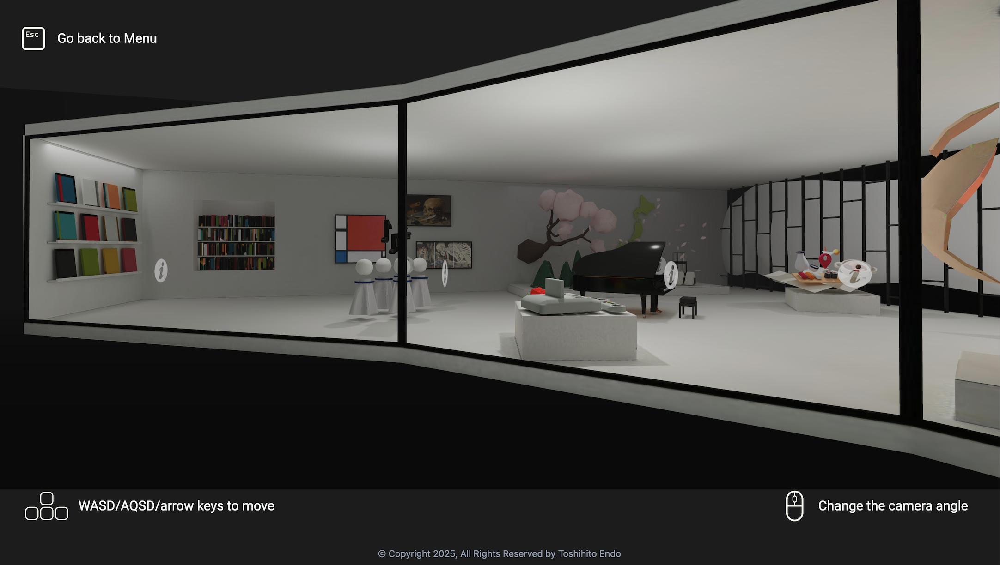
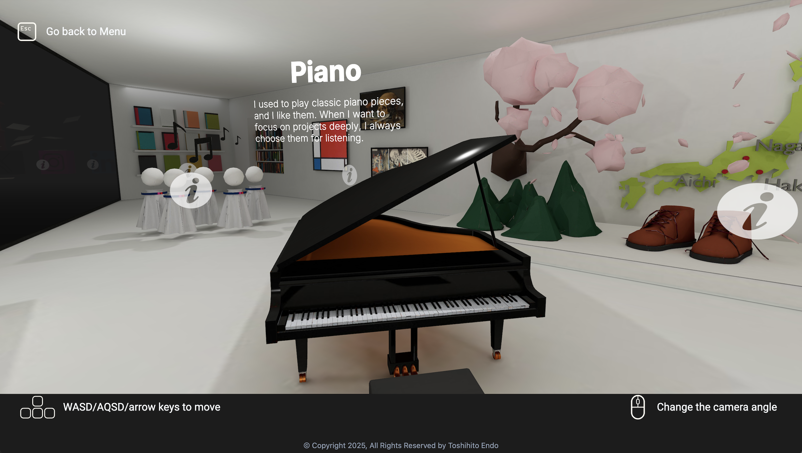
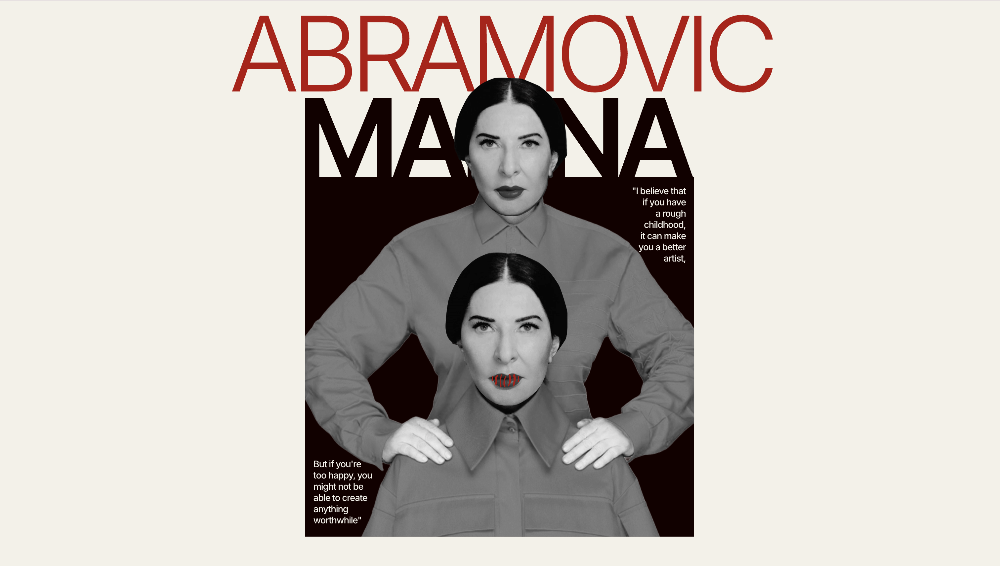
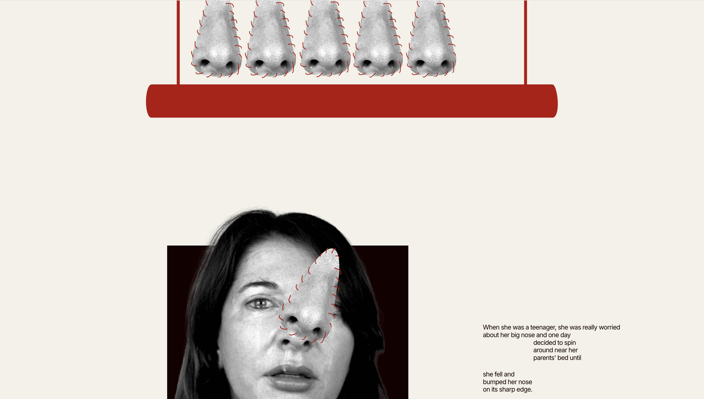
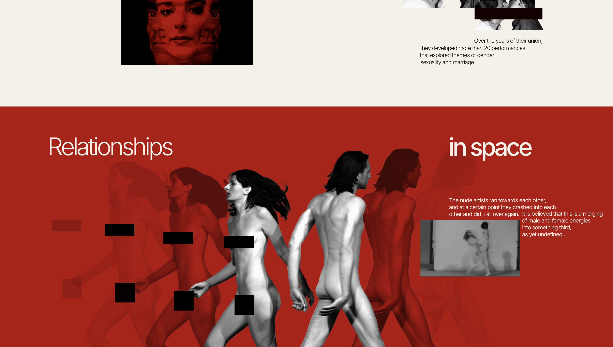
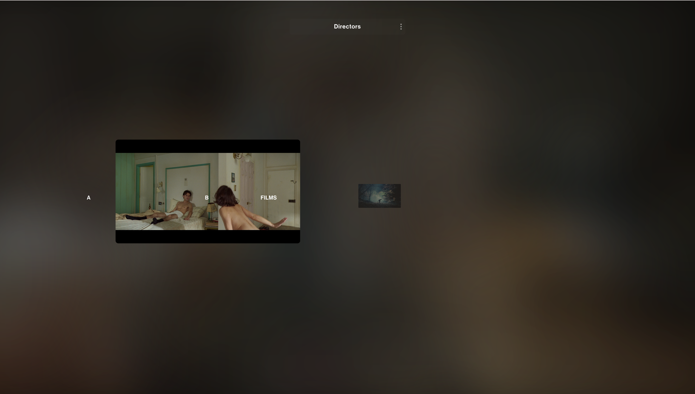
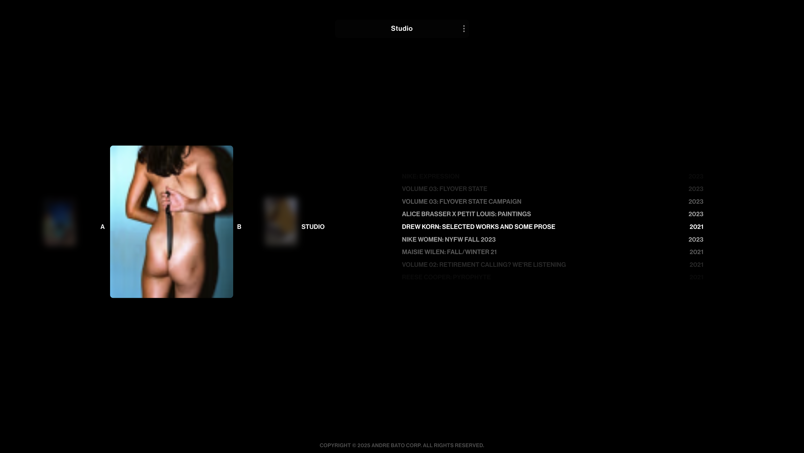

NUEVAS TENDENCIAS EN DISEÑO WEB
Ariadna González Ortiz - Diseño Multimedia y Gráfico 2.1
Awwwards
Webby Awards
FWA
CSS Design Awards
Awwwards
Webby Awards
FWA
CSS Design Awards
Toshihito Endo
La web funciona como un portfolio digital del artista y diseñador 3D
japonés Toshihito Endo. Se presenta como una experiencia interactiva,
donde el usuario navega horizontalmente como si explorarase un mapa, en
un entorno que recuerda a un videojuego. Este enfoque no solo muestra
sus habilidades técnicas, sino también su visión creativa.
El diseño eslimpio, minimalista y conceptual. La paleta de colores, los
sonidos y las animaciones crean una experiencia envolvente que transmite
la identidad del artista. Es un ejemplo de cómo un portafolio puede ser
también una obra personal.
La navegación con scroll horizontal mediante teclas es original, pero
puede resultar confusa. La falta de referencias visuales y estructura
clara puede dificultar la orientación, sobre todo para usuarios poco
familiarizados con este tipo de interacción.
En óviles, el sitio se adapta bien, aunque pierde parte del estilo de
"videojuego". Aun así, prioriza la funcionalidad, lo cual es acertado,
ya que esa interacción sería difícil de replicar en pantallas pequeñas.
El diseño, aunque atractivo, no es del todo accesible: faltan textos
alternativos, hay contrastes mejorables y la navegación no es del todo
intuitiva para personas con diversidad funcional. Una versión más
accesible podría ampliar su alcance.



Siena Films
La web funciona como escaparate creativo para Siena, una casa productora
y estudio audiovisual. Se presenta como una experiencia visual
impactante, con una navegación fluida y animaciones sutiles que
refuerzan el carácter cinematográfico del sitio. El enfoque busca
transmitir no solo los proyectos realizados, sino también la identidad
visual y sensibilidad artística del estudio.
El diseño es limpio, elegante y moderno. Consta de una estética sobria,
basada en el uso del blanco y negro, tipografía fina y transiciones
suaves que aportan una sensación profesional y cuidada. Las imágenes en
alta calidad, bien seleccionadas, refuerzan el estilo visual de Siena y
dejan ver el estándar de sus producciones.
La navegación es vertical, excepto en un punto que es horizontal, el
scroll es suave, lo que crea una experiencia inmersiva sin llegar a ser
confusa. La estructura está bien definida, además la jerarquía es clara
lo que facilita la orientación dentro del sitio, aunque en algunos
momentos ciertas interacciones no son del todo evidentes.
En dispositivos móviles, el sitio se adapta correctamente. Las
transiciones y contenidos se mantienen fluidos. Se mantiene acordce a
como aparece en dispositivos más grandes como ordenadores. Aun así, se
prioriza la legibilidad y el contenido visual, algo esencial en una web
de este tipo.
En términos de accesibilidad, genralmente está bien aqune presenta
algunas limitaciones: faltan textos alternativos y algunos elementos
interactivos podrían estar mejor optimizadops. El contraste de color es
adecuado.
Visitar web
Marina Abramović – Tilda
Esta web funciona en forma de homenaje a una de las artistas de
performance más influyente, Marina Abramović, El contenido se enfoca en
su trayectoria artística, con un recorrido visual y textual que
introduce su obra, sus ideas clave y algunos de sus trabajos más
conocidos. ES un proyecto de divulgación realizados con una plataforma
para realizar webs llamado "Tilda".
El diseño es sencillo, limpio y directo. Predomina el fondo claro con
texto oscuro, y las imágenes de Marina en blanco y negro o color sutil
destacan dentro del espacio. La estética general transmite seriedad y
respeto hacia la figura de la artista. El uso de tipografía sin serifas
y márgenes amplios da una sensación de orden y ligereza. Al tener una
estética general limpia da mucho enfasis a la información y las
animaciones que acompañan a esta.
La navegación es vertical y clásica, con scroll tradicional, lo que hace
que la experiencia sea accesible y clara. Aunque las animaciones hacen
lucir la página más profesional. Cada bloque de contenido está bien
separado, con imágenes acompañando los textos. Es una web ideal para
conocer el trabajo de la artista. Sin embargo, algo a mejorar sería el
acceso a las distintas secciones. Al ser una "one page", tienes que
recorrer toda la página para llegar a los distintos apartados. Se
podrían incluir enlaces internos que pudiesen llevarnos a las distintas
secciones.
La web se adapta bien a móviles. Todo se distribuye y organiza de manera
responsiva. Y el uso y la navegación es igual en todos los tipos de
dispositivos, por lo que la experiencia en móvil es funcional y clara.
En general la accesibilidad es adecuada, aunque siempre hay maneras de
poder mejorarla.



Visitar web
Andre Bato Corp
Esta web sirve como plataforma oficial de Andre Bato Corp, una empresa
de producción y estudio creativo con sede en Nueva York. En ella
encontramos diferentes proyectos de distintos directores creativos.
El diseño del sitio es minimalista y moderno, utilizando una paleta de
colores monocromática que la hace lucir elegante y profesional. La
tipografía es limpia y las imágenes se presentan de manera destacada,
reflejando la identidad visual de la empresa. Sin embargo, la página
principal carece de infromación lo que puede dificultar la navegación el
usuario.
La navegación se basa en un menú principal que incluye enlaces a
secciones clave como "Films", "Directors", "Studio", "Market" e
"Information". Como ya he dicho de primeras es un poco dificil intuir
donde vamos a encontrar el acceso a estas secciones lo que puede
resultar desconcertante para los visitantes que buscan información sobre
la empresa.
El sitio es responsivo, adaptándose adecuadamente a diferentes tamaños
de pantalla y dispositivos móviles. La navegación y el diseño se
mantienen coherentes en los distintos dispositivos, asegurando una
experiencia de usuario adecuada.
El diseño minimalista contribuye a una buena legibilidad, en general
considero que la accesibilidad es adecuada, aunque tal vez mejoraría si
se aumentase un poco el tamaño del texto.



Visitar web